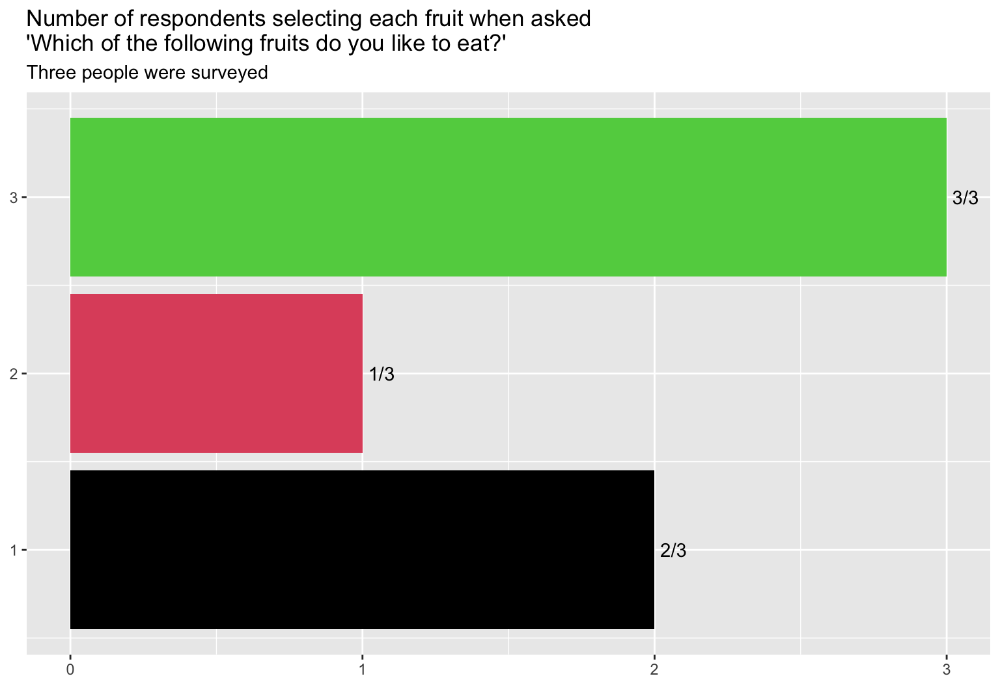
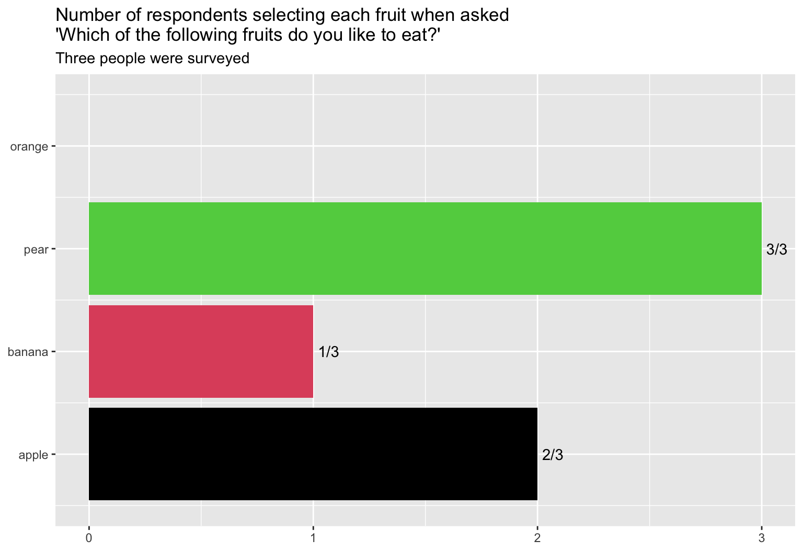

str_wrap_w_levels <- function(x, width, levels){
wrapped <- str_wrap(x, width)
levels_wrapped <- str_wrap(levels, width)
factor(wrapped, levels_wrapped)
}
theme_minimal_bar <- function(...){
list(ggplot2::theme_minimal(...), # %+replace% ##<< we'll piggy back on an existing theme
ggplot2::theme(
panel.grid.minor.x = element_blank(),
panel.grid.major.x = element_blank(),
panel.grid.minor.y = element_blank(),
plot.title.position = "plot",
#complete = TRUE ##<< important, see 20.1.2 Complete themes in ggplot2 book
)
)
}
# dist_plot <- function(var = q05, levels = q05_levels, title = q_long[5], var_wrap = 10, base_size = 23, title_wrap = 40){
ggplot(survey) +
theme_minimal_bar(base_size = 23) +
aes(x = str_wrap_w_levels(q05, 10, q05_levels)) +
scale_x_discrete(drop = F) +
labs(title = q_long[5] %>% str_wrap(40)) +
labs(x = NULL) +
labs(y = NULL) +
stat_count(geom = "label",
size = 6,
aes(label = after_stat(count)),
vjust = 0, label.size = NA,
label.padding = unit(0.05, "lines"),
alpha = .9) +
geom_bar(fill = "midnightblue",
alpha = .9) +
scale_y_continuous(limits = c(0,10), breaks = c(0,3,6,9)) ->
dist_plot_q5; dist_plot_q5Survey response summary
Survey response summary!
dist_plot_q5 +
aes(x = str_wrap_w_levels(q06, 10, q06_levels)) +
labs(x = NULL) +
labs(title = q_long[6] %>% str_wrap(40))dist_plot_q5 +
aes(x = str_wrap_w_levels(q07, 10, q07_levels)) +
labs(x = NULL) +
labs(title = q_long[7] %>% str_wrap(40))dist_plot_q5 +
aes(x = str_wrap_w_levels(q08, 10, q08_levels)) +
labs(x = NULL) +
labs(title = q_long[8] %>% str_wrap(40))library(tidyverse)── Attaching core tidyverse packages ──────────────────────── tidyverse 2.0.0 ──
✔ dplyr 1.1.4 ✔ readr 2.1.5
✔ forcats 1.0.0 ✔ stringr 1.5.1
✔ ggplot2 3.5.1 ✔ tibble 3.2.1
✔ lubridate 1.9.3 ✔ tidyr 1.3.1
✔ purrr 1.0.2
── Conflicts ────────────────────────────────────────── tidyverse_conflicts() ──
✖ dplyr::filter() masks stats::filter()
✖ dplyr::lag() masks stats::lag()
ℹ Use the conflicted package (<http://conflicted.r-lib.org/>) to force all conflicts to become errorscompute_panel_multi_response <- function(data,
scales,
cat_levels,
sep = ";"){
# data = data.frame(responses = survey$q09)
nrespondents <- nrow(data)
data %>%
summarise(responses = paste0(responses, collapse = sep)) %>%
mutate(response = str_split(responses, sep)) %>%
select(-responses) %>%
unnest(response) %>%
filter(response != "NA") %>%
count(response) %>%
mutate(x = factor(response, cat_levels) %>%
as.numeric %>% as.double()) %>%
mutate(y = as.double(n)) %>%
mutate(num_respondents = nrespondents)
}
fruit_cats <- c("apple", "banana", "pear", "orange" )
data.frame(selected_fruit =
c("banana;apple;pear",
"apple;pear",
"banana;pear")) %>%
select(responses = selected_fruit) %>%
compute_panel_multi_response(cat_levels = fruit_cats)# A tibble: 3 × 5
response n x y num_respondents
<chr> <int> <dbl> <dbl> <int>
1 apple 2 1 2 3
2 banana 2 2 2 3
3 pear 3 3 3 3StatMulticat <- ggplot2::ggproto(`_class` = "StatMulticat",
`_inherit` = ggplot2::Stat,
compute_panel = compute_panel_multi_response,
default_aes = aes(label = ggplot2::after_stat(paste0(n, "/", num_respondents))))
data.frame(fruit_selections = c("banana;apple;pear", "apple;pear", "pear")) %>%
ggplot() +
aes(responses = fruit_selections) +
layer(geom = "col", stat = StatMulticat, position = "identity",
params = list(cat_levels = fruit_cats)) +
layer(geom = "label", stat = StatMulticat, position = "identity",
params = list(cat_levels = fruit_cats,
hjust = 0,
alpha = 0,
label.size = 0)) +
aes(fill = after_scale(x)) +
coord_flip() +
labs(title = "Number of respondents selecting each fruit when asked\n'Which of the following fruits do you like to eat?'",
subtitle = "Three people were surveyed")
last_plot() +
scale_x_continuous(breaks = 1:length(fruit_cats),
labels = fruit_cats,
limits = c(1-.5, length(fruit_cats)+.5)
) 
layer_data(i = 1) fill label PANEL response n x y num_respondents flipped_aes ymin ymax xmin
1 1 2/3 1 apple 2 1 2 3 FALSE 0 2 0.55
2 2 1/3 1 banana 1 2 1 3 FALSE 0 1 1.55
3 3 3/3 1 pear 3 3 3 3 FALSE 0 3 2.55
xmax colour linewidth linetype alpha
1 1.45 NA 0.5 1 NA
2 2.45 NA 0.5 1 NA
3 3.45 NA 0.5 1 NAsurvey %>%
select(responses = q09) %>%
compute_panel_multi_response(scales, cat_levels = q09_levels)
ggplot(data = survey) +
aes(responses = q09) +
layer(geom = "bar",
stat = StatMulticat, position = "identity",
params = list(cat_levels = q09_levels)) +
scale_x_continuous(breaks = 1:length(q09_levels),
labels = q09_levels) +
coord_flip()
layer_data()plot_multi_responses <- function(data = survey, var = q11, levels = q11_levels, var_title = q_long[11], var_wrap = 15, base_size = 18, title_wrap = 40){
data %>%
pull({{var}}) %>%
paste(collapse = ";") %>%
str_split_1(";") %>%
data.frame(x = .) %>%
filter(x != "") %>%
filter(x != "NA") %>%
filter(!is.na(x)) %>%
count(x) %>%
mutate(x = x %>% str_wrap(var_wrap) %>%
factor(levels = levels %>% str_wrap(var_wrap) )) %>%
mutate(y = n) %>%
ggplot() +
theme_minimal(base_size = base_size) +
aes(x = x , y = y) +
labs(x = NULL, y = NULL) +
geom_col() +
geom_text(aes(label = paste0(y, "/", 9)), hjust = -0.2) +
aes(fill = x) +
scale_x_discrete(drop = F) +
theme(plot.title.position = "plot") +
# theme(axis.text.x = element_blank()) +
theme(panel.grid.minor.y = element_blank(),
panel.grid.major.y = element_blank(),
panel.grid.minor.x = element_blank())+
scale_y_continuous(limits = c(0,10), breaks = c(0,3,6,9)) +
scale_fill_viridis_d(guide = "none") +
labs(fill = NULL) +
coord_flip() +
labs(title = var_title %>% str_wrap(title_wrap)) +
labs(caption = "Number of respondents indicating each option")
}
# plot_multi_responses()plot_multi_responses(survey, q09, q09_levels, q_long[9])dist_plot_q5 +
aes(x = str_wrap_w_levels(q10, 15, q10_levels)) +
labs(x = NULL) +
labs(title = q_long[10] %>% str_wrap(65)) +
theme_minimal_bar(base_size = 15) plot_multi_responses(survey, q11, q11_levels, q_long[11], base_size = 12, var_wrap = 40, title_wrap = 70)plot_multi_responses(survey, q13, q13_levels, var_title = q_long[13], base_size = 18, title_wrap = 50, var_wrap = 35)plot_multi_responses(survey, q14, q14_levels, var_title = q_long[14])# checkbox
plot_multi_responses(survey, q15, q15_levels, q_long[15])dist_plot_q5 +
aes(x = str_wrap_w_levels(q16, 12, q16_levels)) +
labs(x = NULL) +
labs(title = q_long[16] %>% str_wrap(50)) +
theme_minimal(base_size = 17) +
theme(panel.grid.minor.y = element_blank(),
panel.grid.major.x = element_blank())dist_plot_q5 +
aes(x = str_wrap_w_levels(q17, 12, q17_levels)) +
labs(x = NULL) +
labs(title = q_long[17] %>% str_wrap(40)) dist_plot_q5 +
aes(x = str_wrap_w_levels(q18, 25, q18_levels)) +
labs(x = NULL) +
labs(title = q_long[18] %>% str_wrap(60)) +
theme_minimal_bar(base_size = 15)dist_plot_q5 +
aes(x = str_wrap_w_levels(q19, 25, q19_levels)) +
labs(x = NULL) +
labs(title = q_long[19] %>% str_wrap(45))r q_long[20]`
r paste(survey$q20, collapse = “——————”)`
plot_multi_responses(survey, q21, levels = q21_levels,
var_title = q_long[21])dist_plot_q5 +
aes(x = str_wrap_w_levels(q22, 17, q22_levels)) +
labs(x = NULL) +
labs(title = q_long[22] %>% str_wrap(60)) +
theme_minimal_bar(base_size = 15)dist_plot_q5 +
aes(x = str_wrap_w_levels(q23, 17, q23_levels)) +
labs(x = NULL) +
labs(title = q_long[23] %>% str_wrap(60)) +
theme_minimal_bar(base_size = 15)r q_long[25]`
r paste(survey$q25, collapse = “——————”)`
r q_long[25]`
r paste(survey$q25, collapse = “——————”)`
dist_plot_q5 +
aes(x = str_wrap_w_levels(q26, 17, q26_levels)) +
labs(x = NULL) +
labs(title = q_long[26] %>% str_wrap(60)) +
theme_minimal_bar(base_size = 15)dist_plot_q5 +
aes(x = str_wrap_w_levels(q27, 17, q27_levels)) +
labs(x = NULL) +
labs(title = q_long[27] %>% str_wrap(60)) +
theme_minimal_bar(base_size = 15)r q_long[28]`
r paste(survey$q28, collapse = “——————”)`